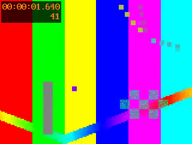
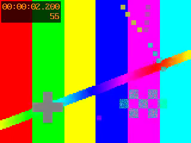
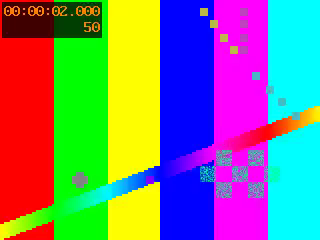

Issue #169 — MPEG-PS/TS seeks started at the next keyframe
.vob/.mpg,
and VapourBox's own DVD import, which writes MPEG-PS) and transport streams (broadcast captures,
.ts/.m2ts) have no keyframe index. A seek to frame N there started decoding
at the keyframe after N: up to a whole GOP late, and
nothing at all past the last keyframe. The preview, the Original side, a
trim's in-point, timeline thumbnails and the detectors' samples were all affected. The preview and
the Original were usually wrong together, so the comparison looked fine.
The fix, for these two formats only: seek one GOP (measured from the file) earlier, keep the
file's own timestamps (-copyts) and drop to the frame with an absolute
trim. Every other format keeps exactly the arguments it had.
1. The mechanism
libavformat seeks a container without an index by binary search over timestamps, reading them
with the demuxer's read_timestamp callback. For MPEG-TS and MPEG-PS that callback adds
every packet to the index as a keyframe (mpegts.c says
AVINDEX_KEYFRAME /* FIXME keyframe? */). So the search stops on the packet whose DTS is
just before the target, which is almost always a non-key packet inside the target's own GOP. The
decoder can't start there. It discards everything up to the next keyframe, and ffmpeg's accurate
seek keeps all of that, since it is already past the target.
Script: landing_probe.py. It stream-copies the first packets after the seek with
-copyinkf, so the non-key ones show (F=0x0), then decodes from the same
seek. Frame 40 of each source:
| Source | GOP | Target (file time) | First packets read | Plain seek decodes |
|---|---|---|---|---|
| DVD-style MPEG-2 PS, 720x576 (variant) | 12, open | 2.120 s | DTS 1.980, 2.100, 2.100: none a keyframe | 48 |
seek_dvd_pal.mpg (fixture) | 12, open | 2.120 s | DTS 1.980, 2.100, 2.100: none a keyframe | 48 |
| H.264 TS (variant) | 25 | 3.060 s | DTS 2.920, 2.960, 3.000: none a keyframe | 50 |
seek_gop_late_video.ts (fixture, video 1 s late) | 25, open | 3.990 s | DTS 3.850, 3.890, 3.930: none a keyframe | 50 |
pal-dvbt-fieldcoded-25i.ts (real DVB-T) | 28, field-coded | 4.182 s | DTS 4.042, 4.062, 4.082: none a keyframe | 56 |
Each result is the first picture of the GOP after the one holding frame 40 (including that GOP's leading B pictures: the DVB-T clip's keyframe 59 is shown after 56–58). This predicts every row of the table in the task (10 → 12, 40 → 48, 77 → 84 with GOP 12; 10 → 25, 40 → 50 with GOP 25).
Not the cause: the container start offset (that was #168, and the fault is identical with the
offset applied), and output timing (-fps_mode passthrough gives the same pictures,
#157 report §6).
2. The fix
-copyts [-ss T−preroll] -apply_cropping codec -i in.ts … -vf [tagfix,]trim=start=container_start+T,setpts=PTS-STARTPTS,<size guard> T = source_decode::seek_time(N) (container-relative, as before: (N−0.5)/fps + video start)
- Preroll ≥ one GOP + reorder delay. The search lands at DTS ≤ T − preroll. The next keyframe's DTS is at most one GOP later, and it is shown at most the reorder delay (PTS − DTS) after that, so it is shown no later than T. The pictures from it to N then decode with their references, including N when N is a leading B picture of a later keyframe.
-copytsand an absolute trim. Without-copyts, ffmpeg's timestamps after the seek are not reliably "file time − (container start + seek)". When the early seek falls before a late video's first packet, or there is no seek, the frames come out rebased to the video's first picture instead, and a trim relative to the seek keeps the wrong frame (the relative rows below: 1 → 25 and 10 → 35 on the 1 s late TS). With-copytsthe filter always sees the PES timestamps.- The trim goes before the PTS reset, so #157's rule (the first kept frame is
PTS 0 for
rawvideo's constant-rate timing) still holds. - The preroll is measured, once per source (
source_decode::seek_plan_from_probe): ffprobe reads the first 20 s of packets. Preroll = the largest gap between keyframes + the largest PTS − DTS + 0.5 s, at least 1 s. With fewer than two keyframes in the window it is 20 s. Measured: DVD fixture 1.22 s (GOP 0.60 by the timestamps the PS carries, reorder 0.12), H.264 TS 1.66 s, DVB-T 1.82 s. - Only
mpegtsandmpeg(ffprobe'sformat_name) get a plan. MP4, MOV, MKV and AVI seek by index, and they were exact already (#157), so their argument lists are unchanged byte for byte (unit-tested). - One decision, two copies. The worker probes the plan into
VideoJob.seek_plan(fill_seek_plan, like the video start offset) and every decoder takes it: encode, preview, the VFR timeline decoder, and the detectors throughcrop_detect::decode_samplesandnative_res. The app's twin (FieldOrderDetector.seekPlanFromProbe, same probe arguments, word for word) drives the Original frame and the timeline thumbnails. Both readTests/TestResources/seek_probe_dvbt.jsonin their unit tests.
3. Every way of seeking, on every source
Script: seek_probe.py. 8 pictures from each start frame, each named by its index in
an independent sequential decode (-fps_mode passthrough, no seek, MD5 of the luma
plane). The cell shows the first picture decoded; red is wrong (any of the 8 differs).
| Source | Seek | 1 | 10 | 30 | 40 | 47 | 49 | 77 | last − 9 |
|---|---|---|---|---|---|---|---|---|---|
seek_dvd_pal.mpgGOP 12, 150 pictures |
plain (before) | 1 | 12 | 36 | 48 | 48 | 49 | 84 | 141 → 144 |
| copyts, 0.5 s | 1 | 10 | 30 | 40 | 47 | 49 | 77 | 141 | |
| copyts, 1–3 s | 1 | 10 | 30 | 40 | 47 | 49 | 77 | 141 | |
| plan, 1.22 s | 1 | 10 | 30 | 40 | 47 | 49 | 77 | 141 | |
seek_gop_late_video.tsGOP 25, video 1 s late |
plain (before) | 1 | 25 | 50 | 50 | 50 | 50 | 100 | none |
relative trim, 2 s (no -copyts) | 26 | 35 | 50 | 50 | 50 | 50 | 77 | 141 | |
| copyts, 0.5 s | 1 | 10 | 30 | 50 | 50 | 50 | 77 | none | |
| copyts, 1–3 s | 1 | 10 | 30 | 40 | 47 | 49 | 77 | 141 | |
| plan, 1.66 s | 1 | 10 | 30 | 40 | 47 | 49 | 77 | 141 | |
pal-dvbt-fieldcoded-25i.tsGOP 28, field-coded, video 1.2 s late, 126 pictures |
plain (before) | 3 | 28 | 30 | 56 | 56 | 56 | 84 | 117 → none |
| copyts, 0.5 s | 1 | 10 | 30 | 40 | 56 | 56 | 84 | 117 | |
| copyts, 1–3 s | 1 | 10 | 30 | 40 | 47 | 49 | 77 | 117 | |
| plan, 1.82 s | 1 | 10 | 30 | 40 | 47 | 49 | 77 | 117 | |
late_video_intra.ts (all-intra) | plain and plan (1.00 s) | 1 | 10 | 30 | 40 | 47 | 49 | 77 | 91 |
late_video.mp4, MKV variant (controls) | plain (no plan) | 1 | 10 | 30 | 40 | 47 | 49 | 77 | last − 9 |
Also in the script's output and agreeing with the rows above: late_video_gop.ts
(the #168 fixtures' content with 25-frame GOPs), the full-size DVD variant and the H.264 TS variant
with no audio gap. On the DVB-T clip, a start of 118 (its last 8 pictures) is wrong at
every preroll, plain seek included: the decode repeats 124 and drops a picture at the
very end. Its untrimmed constant-rate decode does the same (125 slots for 126 stored pictures), so
that is the clip's tail timestamps (task #16's area), not the seek. The heavy test stops at 117 for
that reason.
What this shows and doesn't: a preroll of 1 s happens to be enough for every fixture here (no GOP is longer than 1.12 s), and 0.5 s is not. That is why the preroll is measured per file rather than fixed: a broadcast H.264 stream with 2–5 s GOPs needs more. The rule was not checked against such a stream from a real broadcaster. It was checked on a synthetic 1080p TS with 2 s GOPs (§6).
4. The worker, before and after
Script: worker_probe.py, run with both workers, every pass off. The preview is the
worker's --preview --frame N. The Original is the app's before-frame command,
mirrored (with the video start offset; with the seek plan only after the fix). Each picture is
named by the closest sequential frame from N−5 to N+35 (mean absolute luma difference over the full
picture). A trim is a lossless FFV1 encode, each output frame named by MD5.
| Source | Frame | Preview, before | Original, before | Both, after |
|---|---|---|---|---|
seek_dvd_pal.mpg | 1 | 1 | 1 | 1 |
| 10 | 17 | 12 | 10 | |
| 41 | 41 | 48 | 41 | |
| 47 | 53 | 48 | 47 | |
| 77 | 77 | 84 | 77 | |
| 145 | 149 | 145 | 145 | |
seek_gop_late_video.ts | 1 | 1 | 1 | 1 |
| 10 | 30 | 25 | 10 | |
| 41 | 55 | 50 | 41 | |
| 49 | 55 | 50 | 49 | |
| 77 | 80 | 100 | 77 | |
| 141 | 145 | none | 141 | |
| 148 | 145 | none | 148 | |
pal-dvbt-fieldcoded-25i.ts | 10 | 33 | 28 | 10 |
| 40 | 61 | 56 | 40 | |
| 58 | 61 | 58 | 58 | |
| 77 | 89 | 84 | 77 | |
| 117 | 117 | none | 117 | |
small_clip.mp4 (control) | 10, 41, 77 | exact | exact | exact |
| Trimmed encode | Before | After |
|---|---|---|
seek_dvd_pal.mpg 37..52 | 37 … 52 (exact by chance) | 37 … 52 |
seek_gop_late_video.ts 37..52 | 50 … 65 (starts at the next GOP) | 37 … 52 |
pal-dvbt-fieldcoded-25i.ts 45..60 | 56 … 71 | 45 … 60 |
late_video_gop.ts 30..59 | 50 … 79 | 30 … 59 |
small_clip.mp4 41..52 (control) | 41 … 52 | 41 … 52 |
The preview decodes a window that starts a few frames before N (the temporal radius), so its overshoot differed from the Original's and the two disagreed by a few frames, and sometimes one was right by chance (DVD 41 and 77; a seek window that starts at a keyframe). The "none" rows were a black or empty Original past the last keyframe.
| Source frame 41 | Preview, before | Original, before | Preview, after | Original, after |
|---|---|---|---|---|
 |
 |
 |
 |


seek_gop_late_video.ts, frame 41, every pass off, full
size (320x240). Read the counter in the top-left corner. Source frame 41 is 1.640 s. Before the fix
the preview showed 55 and the Original 50. After,
both are 41: the Original's PNG is byte-identical to the reference, and the preview's has the same pixels with a different PNG header.5. The detectors
Script: detector_probe.py. --detect-noise-halo and
--detect-crop sample 24 frames across the source through the same decoder as the
preview.
| Source | Usable samples, before → after | Noise / halo verdicts | Crop |
|---|---|---|---|
pal-dvbt-fieldcoded-25i.ts | 23 → 24 | no / no, both (halo −3.46 → −3.33) | 8, 8, 0, 8 both |
seek_gop_late_video.ts | 21 → 24 | no / no, both | none, both |
seek_dvd_pal.mpg | 24 → 24 | no / no, both (halo 0.58 → 0.55) | none, both |
Before, the samples past the last keyframe decoded nothing and were dropped, and
the others were pictures up to a GOP late. No verdict changes on these sources: they are clean, and
the wrong pictures came from the same clip. The detectors' thresholds and calibration are unaffected
(their fixtures are MKVs, which carry no plan). integration_noise_halo_test and
integration_crop_detect_test pass unchanged.
6. What it costs
Script: cost_probe.py. An 11-frame preview-style decode from the middle of a
30 s 1080p H.264 TS with 2 s GOPs (plan: 2.70 s), median of 5 runs: plain seek
0.071 s, the fix 0.155 s, a 3 s preroll 0.176 s. About one GOP
of extra decode per seek. Negligible for SD MPEG-2. The detectors pay it 24 times per run. Measured
on Apple Silicon only. An untrimmed encode doesn't seek, so it pays nothing.
A decode that starts at a non-key packet makes FFmpeg's H.264 decoder log "co located POCs unavailable" or "mmco: unref short failure" for the frames it can't reference. Those frames are before the trim, and the plain seek logged the same. The worker treats only the exit status, and the size guard's message, as failure.
7. Decisions
- Seek early and trim, not
-seek2any.-seek2anyseeks to any packet. That is effectively what already happened, and it makes the decoder output broken pictures. - Not "decode from the start". That is O(N) per seek: a frame an hour into a DVD would take a minute or more per preview, and the detectors take 24 samples.
- Not a per-seek keyframe probe. It would be exact with no slack, but costs one more process per seek in both worker and app. A GOP-sized preroll measured once does the same job for ~0.1 s.
- Only TS/PS. Indexed formats were exact, so changing their arguments buys
nothing and costs a GOP of decode. No plan means byte-identical arguments (unit test
a_plan_leaves_frame_zero_and_untrimmed_decodes_aloneand the existing pins). - Frame 0 still never seeks or trims (#168): no change to an untrimmed decode.
- Thumbnails too. CLAUDE.md says every seek goes through the one rule, and a plain thumbnail seek past the last keyframe produced nothing.
- The worker probes the plan itself, like the video start offset, so a job JSON
from any app version gets it. A job that carries
seekPlanis not re-probed.
8. Not fixed, not tested, limits
- Raw elementary streams (
.m2v→mpegvideo,.h264/.264) have no timestamps at all. Seeks there are byte-rate guesses (raw_es_probe.py: m2v 1 → 12, 10 → 0, 40 → 36; raw H.264: nothing decodes after any seek). They get no plan. They are rarely a user's source. - Timestamp discontinuities (a recording spliced across streams, a VOB set
whose clock resets between cells). "Frame N = N/fps after the first picture" is not defined there,
and
-copytsturns off ffmpeg's discontinuity correction. Neither the old seek nor the new one handles them. Corrected at review: the original wording said this was untested.discontinuity_probe.pyjoins two copies of a program stream, so the clock resets at picture 150, and asks a trimmed decode for 150 frames. Starting at 100 the old seek returned all 150, though from picture 108. The fix starts at 100 but returns only 52: it stops at the reset. Starting at 140 the old seek returned 6 and the fix 10. Starting at 160, past the reset, both returned none. So a trim whose in-point is before a backward reset and whose out-point is after it is now shorter. Before, it started late. Both are wrong. Such files are rare within one title, and frame numbering across a reset needs its own fix. Fixed since by task #21: a source with a reset is decoded from a joined copy, and frame N counts straight through (its report). - A GOP longer than the 20 s window, or one that grows later in the file than the first 20 s. The preroll can then be short, and the worst case is the old behaviour (a later keyframe), never worse.
- MPEG-2 in AVI (seeks 1–2 frames early) and leading repeat slots (AVI null frames, soft telecine, the DVB-T tail above) are tasks #15 and #16.
- Only macOS arm64. The seek is FFmpeg's demuxer code, which is the same on every platform, and the heavy tests run nightly on all four.
9. Tests
- Rust unit tests (
source_decode.rs): the DVB-T plan from the shared probe JSON, formats, floor and fallback,decoder_seek, every builder's-copyts/-ssbefore-iand trim-then-reset in the one-vf, frame 0 and untrimmed unchanged.video_job.rs:seekPlanround trip. - Dart unit tests (
mpeg_seek_plan_test.dart): the same plan from the same JSON, probe arguments and constants read from the Rust source, before frame and thumbnails with and without a plan. - Heavy:
integration_seek_alignment_test.dartaddsseek_dvd_pal.mpg,seek_gop_late_video.ts(fromTests/TestResources/generate_mpeg_seek_test.sh) and the DVB-T clip. It checks preview, Original and a mid-GOP trim against the sequential decode, at mid-GOP frames, leading B pictures and past the last keyframe.integration_video_start_offset_test.dartaddslate_video_gop.ts, so the pictures, trims and sound sync are also checked on a TS that seeks with a plan.
10. Reproduce
BEFORE_WORKER=<worker built from 5c3b762> docs/reports/issue-169-mpeg-seek/scripts/run.sh
run.sh builds the uncommitted variants (make_variants.py) into
$SEEK_WORK and runs every script above. The committed fixtures come from
Tests/TestResources/generate_mpeg_seek_test.sh and
generate_video_start_offset.sh.